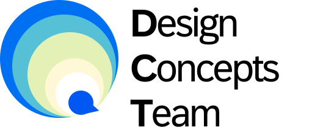

Responsible for the specification of the Smart Link feature and the development of the team logo, which is used internally today.
Where specification meets storytelling. Back to timelineAs part of the Cloud ERP Design Concepts Team (DCT), I was responsible for creating the specification for the Smart Link feature. This included documenting conceptual and functional requirements and working closely with the guidelines. I also had to proactively reach out to people to clarify open questions and gather the information needed. Through this, I learned how to communicate clearly, work independently, and translate design concepts into structured requirements. I also gained a better understanding of how specifications serve as an important interface between Design and Development.
In addition, I developed the team logo, a visual element that represents the team and its identity. Throughout the process, I created and presented several different versions and approaches to incorporate the ideas and expectations of the team members. This required me to actively listen to different perspectives, explain my reasoning, and adapt my approach based on the feedback I received. The goal was not simply to create a logo, but to find a solution that everyone could identify with and feel comfortable using. This experience strengthened my ability to communicate ideas, handle different opinions, and find common ground.
This station gave me a solid foundation in translating design concepts into structured, development-ready documentation. I learned how to navigate a professional design environment, work with guidelines and stakeholders, and take a branding project from first ideas to a finished result that the team uses today.
Alesia showed good initiative in finding the research questions, setting up the user interviews, and doing scientific research for the theory part. She followed all the steps for a user-centred design with enough attention to the details and outcomes. She used different sources of inspiration for drafting the initial designs. She practised the SAP culture of networking by talking to most of the team members and got a good understanding of the work that we do in the team.